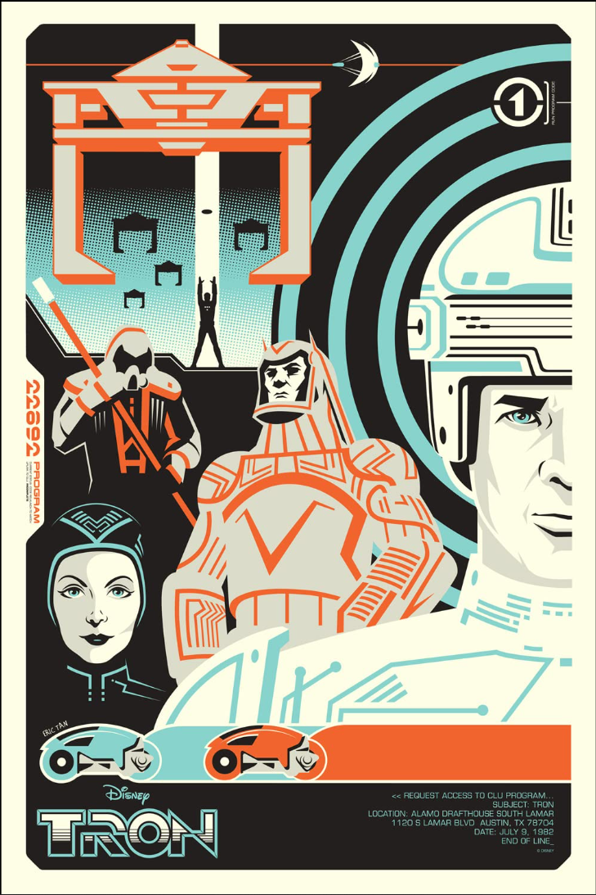
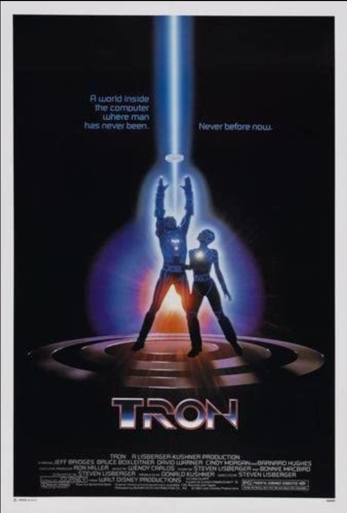
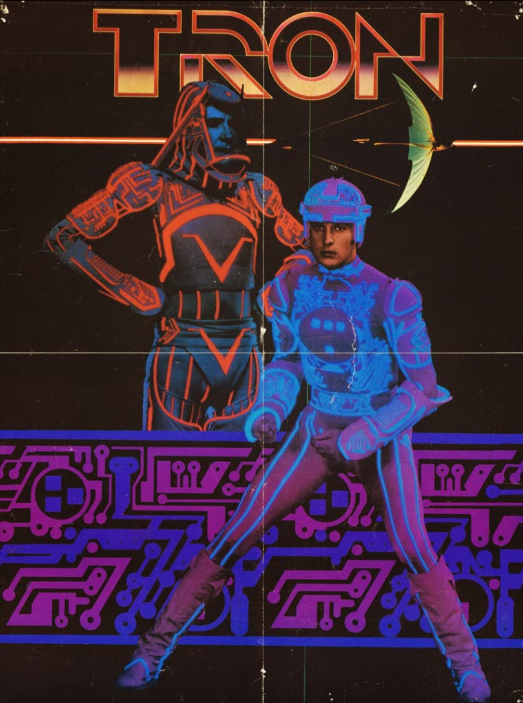
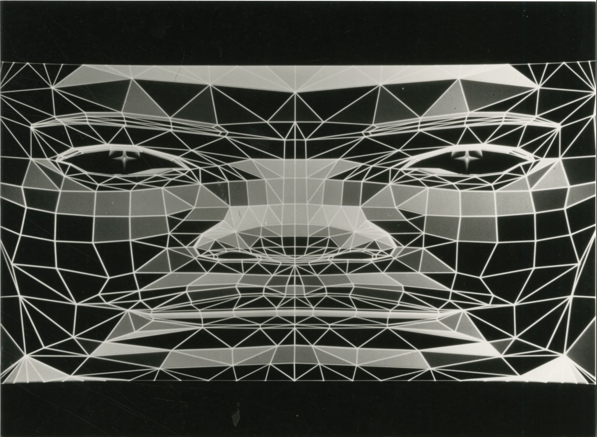
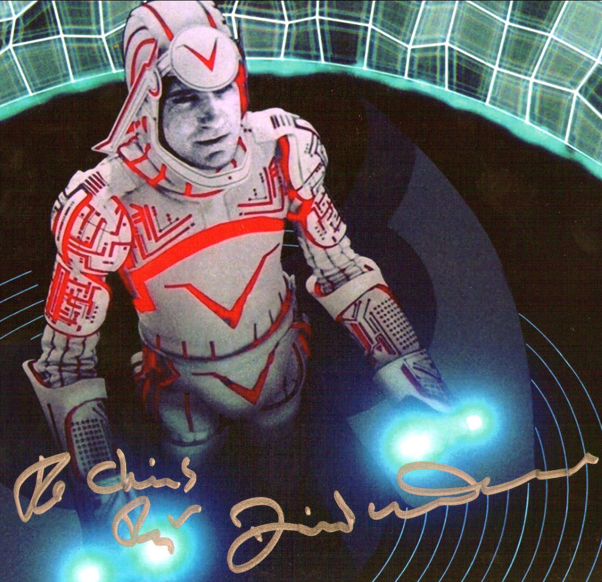
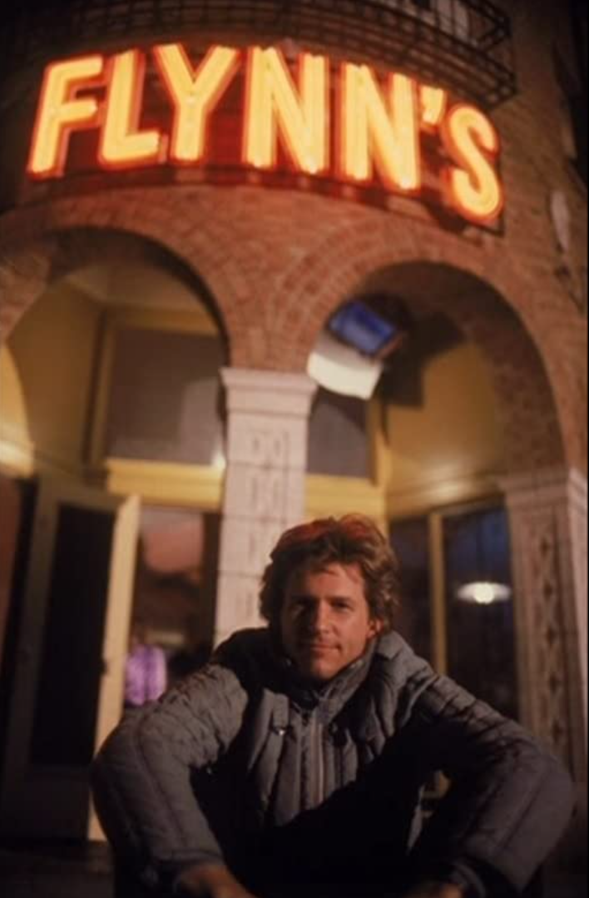

Tron (stylized as TRON) is a 1982 American science fiction action-adventure film written and directed by Steven Lisberger from a story by Lisberger and Bonnie MacBird. The film stars Jeff Bridges as Kevin Flynn, a computer programmer and video game developer who is transported inside the software world of a mainframe computer where he interacts with programs in his attempt to escape; it also stars Bruce Boxleitner, David Warner, Cindy Morgan, and Barnard Hughes. Tron, along with The Last Starfighter, has the distinction of being one of cinema's earliest films to use extensive computer-generated imagery (CGI).
The inspiration for Tron dates back to 1976, when Lisberger became intrigued with video games after seeing Pong. He and producer Donald Kushner set up an animation studio to develop Tron with the intention of making it an animated film. To promote the studio itself, Lisberger and his team created a 30-second animation featuring the first appearance of the title character. Eventually, Lisberger decided to include live-action elements with both backlit and computer animation for the actual feature-length film. Various studios had rejected the storyboards for the film before Walt Disney Productions agreed to finance and distribute Tron. There, backlit animation was finally combined with the computer animation and live action.
Tron was released on July 9, 1982. The film was a moderate success at the box office, and received positive reviews from critics, who praised its groundbreaking visuals and acting but criticized its storyline as being incoherent. Tron received nominations for Best Costume Design and Best Sound at the 55th Academy Awards, but was not nominated in the Best Visual Effects category. Tron spawned multiple video games (including an arcade tie-in released shortly after the film), and as it became a cult film, a multimedia franchise including comic books. A sequel titled Tron: Legacy, directed by Joseph Kosinski, was released in 2010, with Bridges and Boxleitner reprising their roles and Lisberger acting as producer, which itself was followed by the animated series Tron: Uprising, set between the two films.





